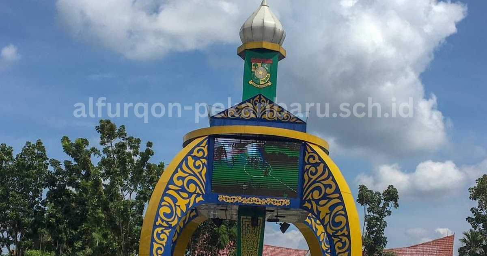

Sejarah
Bangkinang merupakan ibu kota Kabupaten Kampar di Provinsi Riau yang memiliki sejarah panjang sebagai wilayah adat dan pusat pemerintahan. Sejak dahulu, daerah ini berada dalam pengaruh budaya Minangkabau dan memiliki hubungan dengan Kerajaan Pagaruyung, yang terlihat dari sistem adat dan kekerabatan masyarakatnya. Sungai Kampar menjadi jalur penting perdagangan dan transportasi, sehingga mendorong pertumbuhan permukiman dan aktivitas ekonomi. Pada masa kolonial Belanda, Bangkinang berkembang sebagai pusat administrasi lokal, dan setelah kemerdekaan Indonesia serta pembentukan Provinsi Riau tahun 1958, Bangkinang ditetapkan sebagai ibu kota Kabupaten Kampar. Hingga kini, Bangkinang terus berkembang sebagai pusat pemerintahan dan ekonomi, dengan tetap mempertahankan nilai adat dan budaya masyarakat Kampar yang religius dan menjunjung tinggi tradisi.
